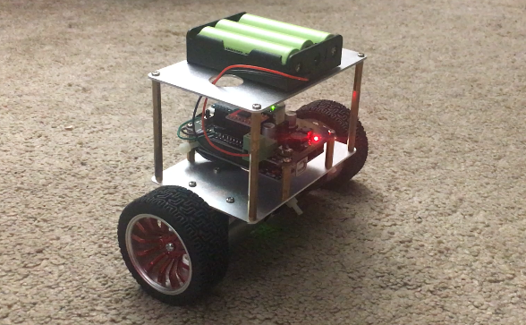
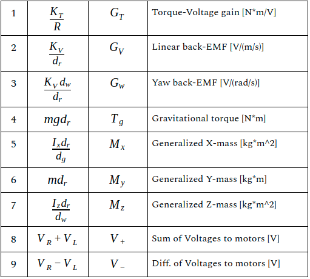
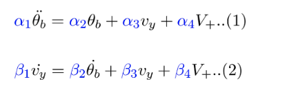
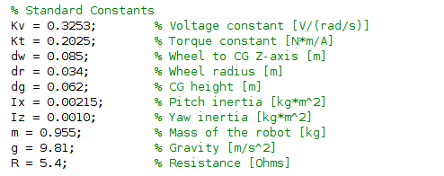

LAB 4: Transfer Functions & Transient Response¶
Introduction¶
Welcome to the fourth session of the ES3011 experimental labs.
In this lab, we focus on transient response analysis. The goal is there is to study the time response of the system to different test signals. This analysis provides insight into the response characteristics of the system and enable controller design.
We will cover three sections in this lab:
-
Transient response analysis for basic dynamical systems
-
Transient response analysis for the BalBot (self-balancing robot)
Learning Outcomes¶
Our goal at the end of this labs is that you should be able to:
- Understand how to perform transient response analyses on basic dynamical systems
- Understand how to perform transient response analyses for real robotic systems (the BalBot)
1. Transient Response Analysis for Basic Dynamical Systems¶
In this section, you will perform transient response analysis on the basic dynamical systems previously considered: (1) Mass-Spring-Damper, (2) Motor Position.
Instructions:¶
In this lab instruction sheet,
- Complete problems I (Mass-spring-damper) and IV (Motor position) in the MATLAB section.
2. Transient Response Analysis for the BalBot (Self-balancing Robot)¶

In this section, we will build up on the s-domain equations derived by applying laplace transformation in Lab 3.
Instructions:¶
-
Simplify your three differential equations by grouping the constants based on the table below:

-
Derive the state-space representation of the system.
- For this, we'll use only the first two differential equations derived previously. Your equations should be in the form below.

- Please use the constants defined below for variables

- Hint: The state variables should be pitch angle, pitch velocity and linear velocity. The input should be sum of voltages to motors and output should be
-
Using your state-space model defined above, please obtain the transient response for unit-impulse, unit-step and unit-ramp functions and report the values for peak time, settling time, rise time and maximum overshoot.
What to Submit:¶
Prepare a report which contains the following:
- Introduction: a few sentences to introduce the topic of the lab
- Section 1: Transient Response Analysis for Basic Dynamical Systems
- Include plots for each of the transient response analysis
- Include values of metrics obtained (e.g. rise time, etc.)
- Section 2: Transient Response Analysis for the BalBot (Self-balancing Robot)
- Include plots for each of the transient response analysis
- Include values of metrics obtained (e.g. rise time, etc.)
- Conclusion: a few sentences concluding the report explaining the goals, what you learned, and any other conclusions.